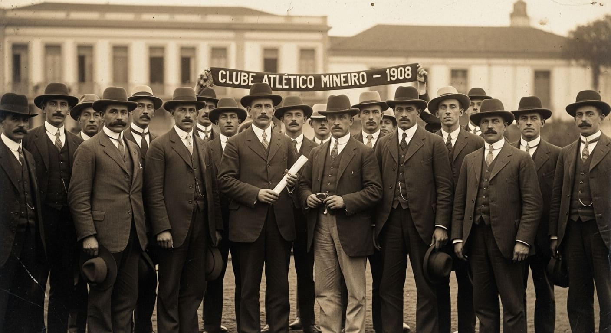
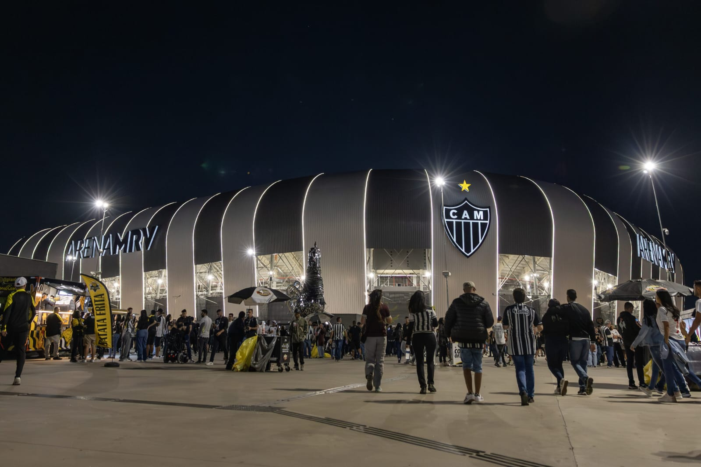
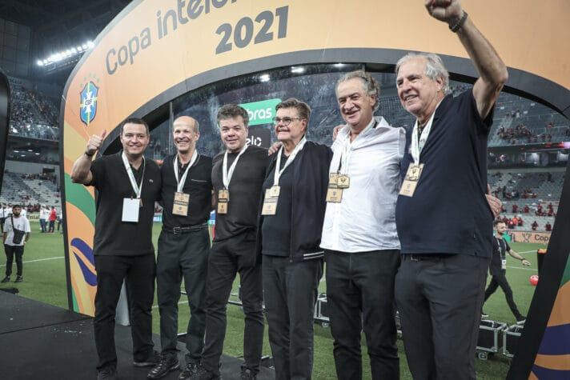
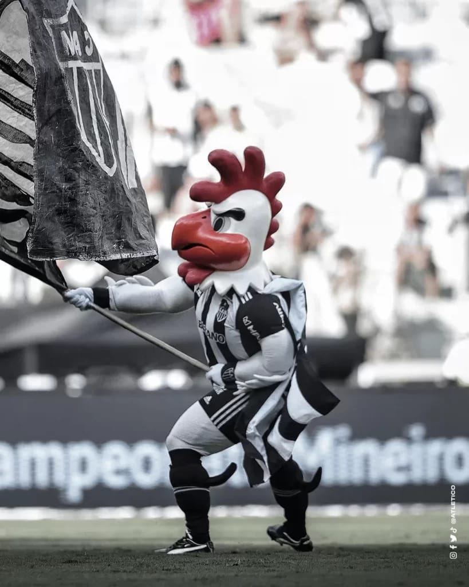

<header class="header">
    <div class="logo-area">
        
    </nav>
</header>
<!DOCTYPE html>
<html lang="en">
<head>
    <meta charset="UTF-8">
    <title>Atlético Mineiro</title>
    <link rel="stylesheet" href="style.css">
</head>
<body>

<header>
    <h1>Atlético Mineiro</h1>
    <nav>
        <a href="index.html">Home</a>
        <a href="about.html">About</a>
        <a href="titles.html">Titles</a>
        <a href="players.html">Players</a>
        <a href="opinion.html">Opinion</a>
    </nav>
</header>

<div class="container">
    <h2>Welcome to the Galo Website</h2>
    <p>This website is dedicated to Clube Atlético Mineiro, one of the greatest teams in Brazil.</p>

    <div class="cards">
        <div class="card"><a href="about.html">About the Club</a></div>
        <div class="card"><a href="titles.html">Titles</a></div>
        <div class="card"><a href="players.html">Players</a></div>
        <div class="card"><a href="opinion.html">My Opinion</a></div>
    </div>
</div>

</body>
</html>
<section class="section">
    <h2>Club Highlights</h2>

    <div class="info-grid">

        <!-- FUNDAÇÃO -->
        <div class="info-box">
            
            <h3>Foundation</h3>
            <p>Clube Atlético Mineiro was founded in 1908 in Belo Horizonte, Brazil. Since its foundation, the club has become one of the most traditional and respected teams in Brazilian football, building a legacy of passion, strength, and determination.</p>
        </div>

        <!-- ESTÁDIO -->
        <div class="info-box">
            
            <h3>Stadium</h3>
            <p>Atlético Mineiro plays at Arena MRV, a modern stadium that represents a new era for the club. It provides an incredible atmosphere, bringing fans closer to the team and creating a powerful home advantage.</p>
        </div>

        <!-- SAF -->
        <div class="info-box">
            
            <h3>Current Moment (SAF)</h3>
            <p>The club is currently managed as a SAF (Sociedade Anônima do Futebol), improving financial stability and professional management. This new structure aims to ensure long-term success and competitiveness.</p>
        </div>

        <!-- CURIOSIDADES -->
        <div class="info-box">
            
            <h3>Curiosities</h3>
            <p>The mascot of Atlético Mineiro is the rooster, known as "Galo". The club is famous for its passionate fans and historic achievements, including unforgettable comebacks and major titles.</p>
        </div>

    </div>
</section>
